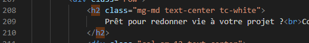
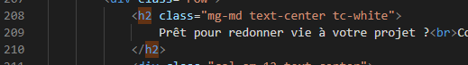

Le site actuel présente de nombreux problèmes d'optimisation pour les moteurs de recherches (SEO) et d'accessibilité.
Ces soucis sont répertoriés dans un tableau
Dix recommandations y sont sélectionnées, on les verra en détail ici.
Bien choisir l'intitulé de la balise title est important car c'est le lien qui apparaît dans les moteurs de recherches.
Cette balise était vide.
Il faut la remplir avec un titre représentatif de la page, en essayant d'y inclure le mot-clé.
Cette balise sert à décrire votre page aux internautes, elle apparaît sous le titre dans les moteurs de recherches.

Elle est importante car elle va agir sur le nombre de clics que vous allez pouvoir obtenir depuis la page de résultats du moteur de recherches.
Il faut y insérer les mot-clé, en décrivant au mieux la page du site, sans dépasser les 230 caractères.


Le titre h1 doit apparaître une seule fois par page et, si possible, contenir le mot-clé.
Les autres, h2, h3, ..., doivent apparaître dans le bon ordre de manière cohérente.
Les titres amènent une structure claire à la page at apportent aux robots des moteurs de recherches une meilleure compréhension de la page.
Le h1 sur le site actuel est utilisé pour afficher le nom du site. Il serait plus judicieux d'utiliser le h1 pour y inclure une description du site.

Le texte affiché via une image serait un bon exemple de h1.

Les balises h2 et h3 sont mal utilisées. En effet elles contiennent du texte qui ne représente pas des titres.
 

Il serait plus cohérent de changer ces balises h2 et h3 en balises de texte et créer deux balises h2.


Cacher ainsi des mots-clé en écrivant le texte de la même couleur que le fond est une technique de SEO appelée Black-Hat.
Cette technique vise à tromper les moteurs de recherche en ajoutant du texte que l'utilisateur lui ne pourra pas voir.
Cette façon de faire est à bannir car Google lutte activement contre, vous risqueriez d'être banni des résultats de recherche google.
Il faut donc retirer ce texte.
On retirera de la même manière et pour les mêmes raisons, les mots-clé affichés en toute petite taille près du logo de la page d'accueil.
Sur la page de contact le texte n'apparaît pas à cause de sa couleur.
Il faut donc la changer pour que l'utilisateur puisse lire ce texte.